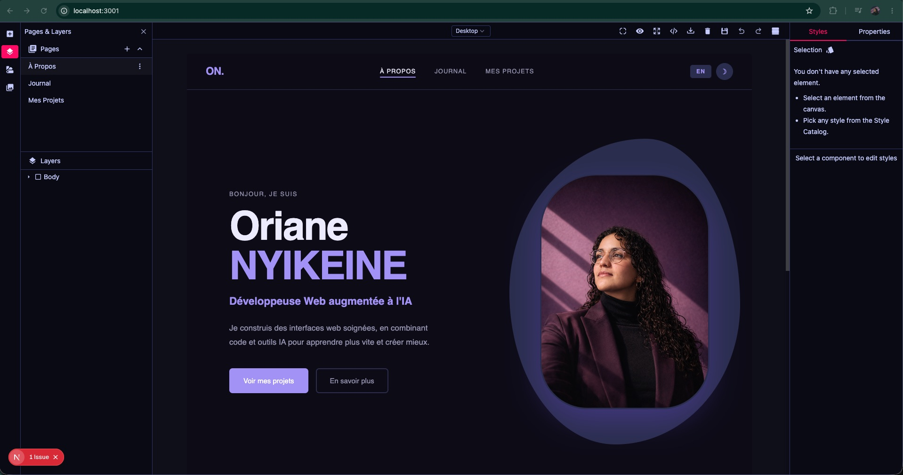

Bonjour, je suis Hello, I'm
Développeuse web freelance Freelance web developer
Je conçois et développe des sites en combinant la créativité de Webflow avec la puissance de Claude Code pour livrer avec vitesse et efficacité. Disponible en remote. I design and build websites by combining the creativity of Webflow with the power of Claude Code to deliver with speed and efficiency. Available remote.
Attirée par le code autant que par le design, je me suis orientée vers un master data science en école de commerce. Ce que j'aimais dans le code, c'était voir un résultat visuel et esthétique de ce que je construisais. Cette combinaison m'a menée vers la création de sites, appris en autodidacte, du no-code (WordPress) au low-code (Webflow) jusqu'au code pur (HTML, CSS, JavaScript). L'arrivée des IA a failli me faire douter de ces années d'apprentissage. J'ai choisi de les considérer autrement : non pas comme une menace, mais comme un super outil pour aller plus vite, plus loin et faire encore mieux. Drawn to both code and design, I chose a data science master's at business school. What I loved about coding was seeing the visual and aesthetic result of what I was building. That combination led me to web creation, self-taught, from no-code (WordPress) to low-code (Webflow) through to pure code (HTML, CSS, JavaScript). The arrival of AI nearly made me question those years of learning. I chose to see it differently: not as a threat, but as a powerful tool to go faster, further and do even better.
En lire davantage Read more
Quand Webflow est devenu financièrement inaccessible, j'ai cherché une alternative. J'ai alors trouvé GrapesJS, un moteur d'éditeur visuel open source que je pouvais faire tourner directement dans VS Code. J'en ai fait un outil sur mesure : WebBuilder Studio. When Webflow became financially out of reach, I looked for an alternative. I found GrapesJS, an open source visual editor engine I could run directly in VS Code. I turned it into a bespoke tool: WebBuilder Studio.
Mon process sur chaque site : je génère une première version avec Claude Code. Solide, mais générique. Je l'importe ensuite dans WebBuilder Studio et je retravaille composant par composant, jusqu'à avoir quelque chose de propre et cohérent. My process on every site: I generate a first version with Claude Code. Solid, but generic. I then import it into WebBuilder Studio and rework it component by component, until I have something clean and coherent.
WebBuilder Studio n'est pas seulement un outil de travail. C'est également un véritable « bac à sable », que je modèle à ma guise en y ajoutant les fonctionnalités qui me sont utiles. Il me permet, en plus de travailler sur des sites, d'apprendre à coder et à construire un outil complexe et solide. WebBuilder Studio is not only a work tool. It is also a genuine sandbox, which I shape as I please by adding features that are useful to me. Beyond building sites, it allows me to learn to code and to build something complex and solid.
GitHub